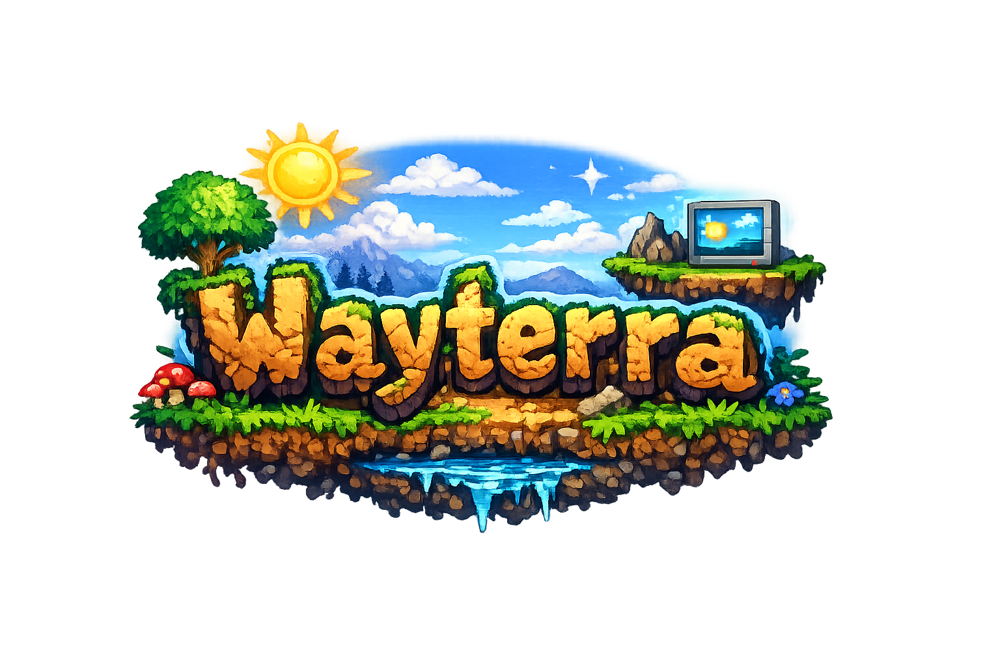

Wayterra
Wayterra is an experimental Wayland compositor inspired by the game Terraria by Re-Logic.
To accommodate different workflows, users can choose between three modes, each designed for different ways of interacting with the desktop.